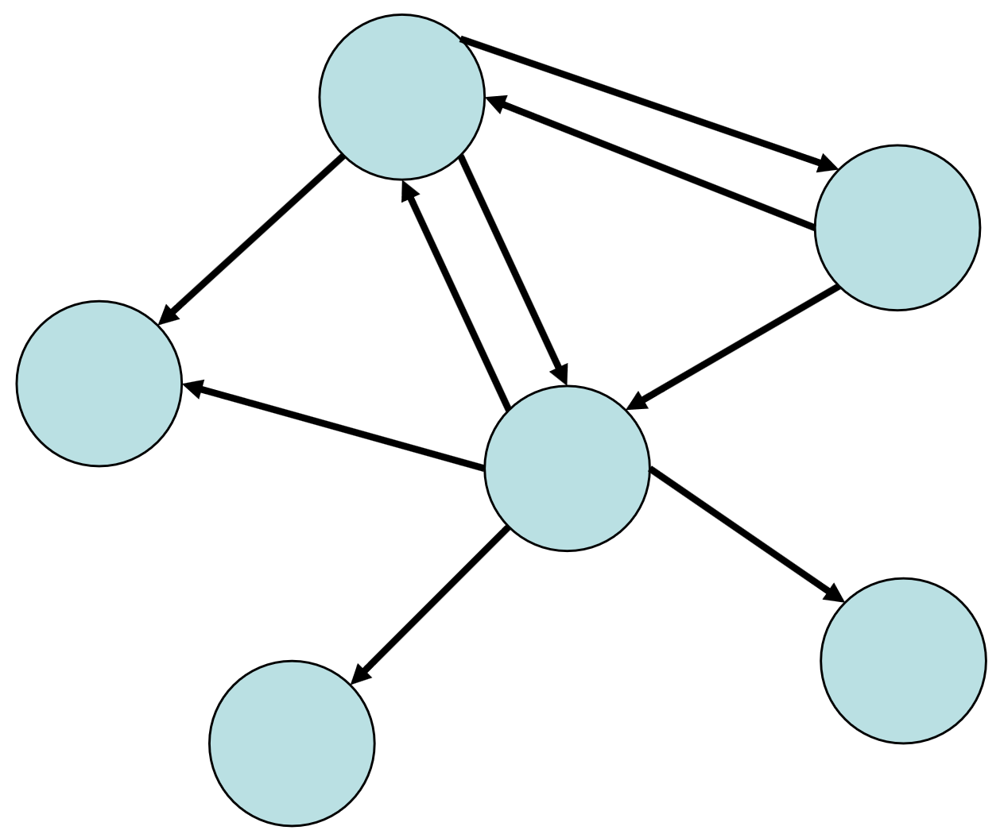
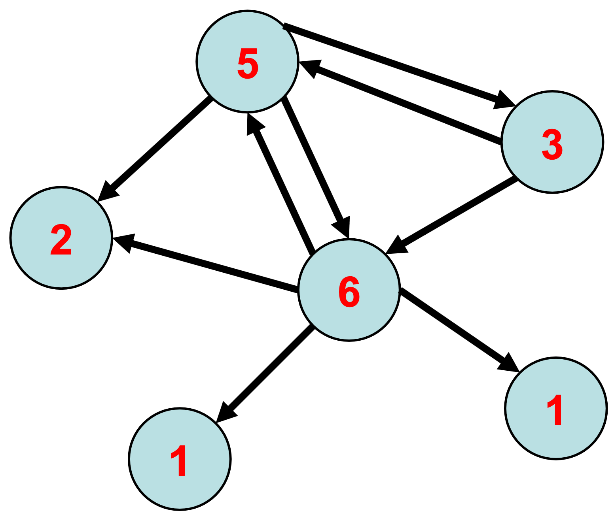
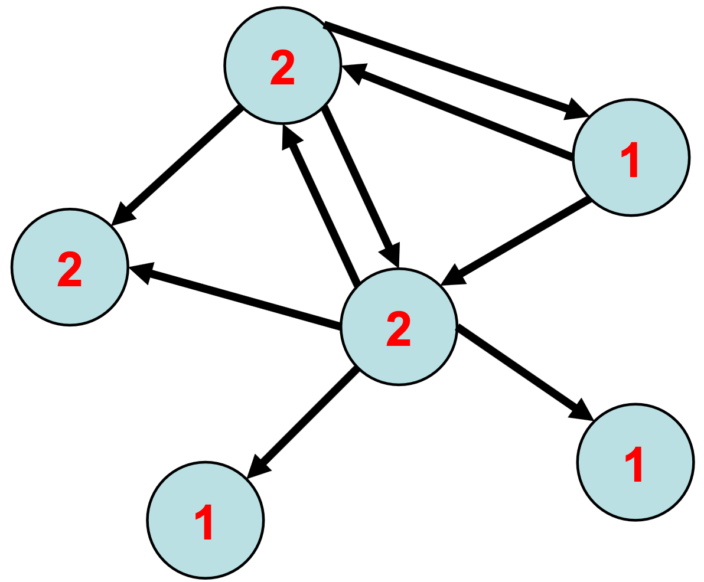
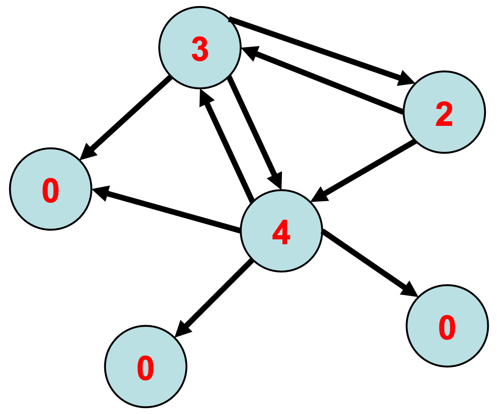
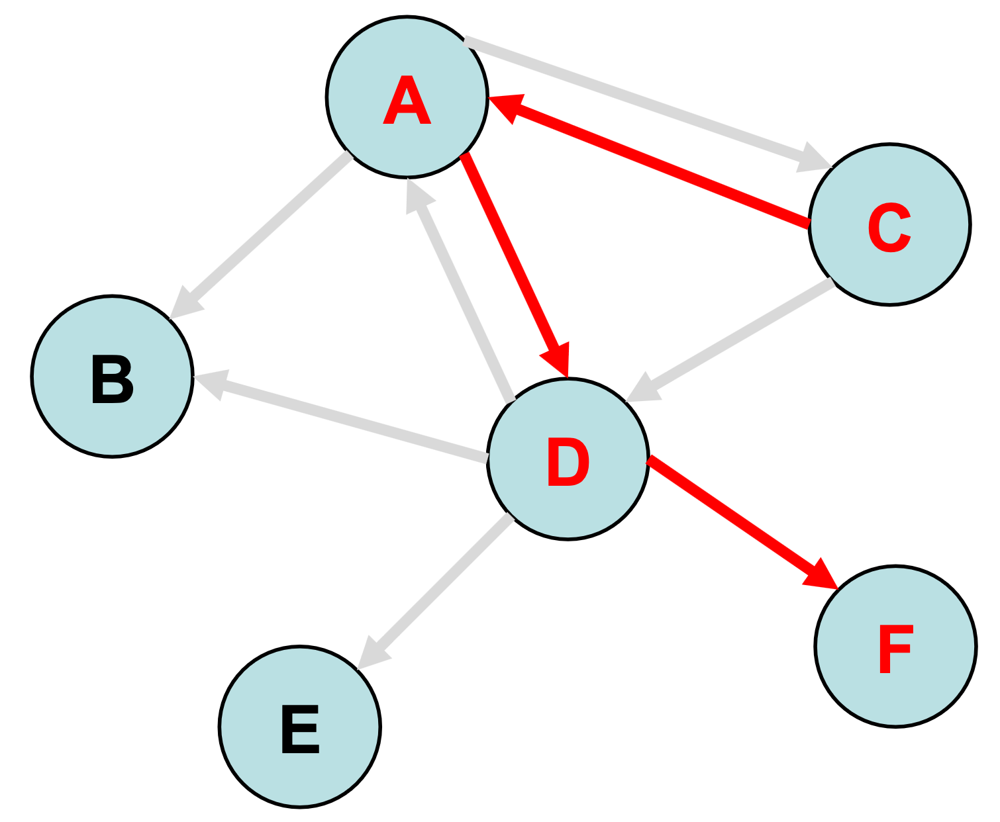
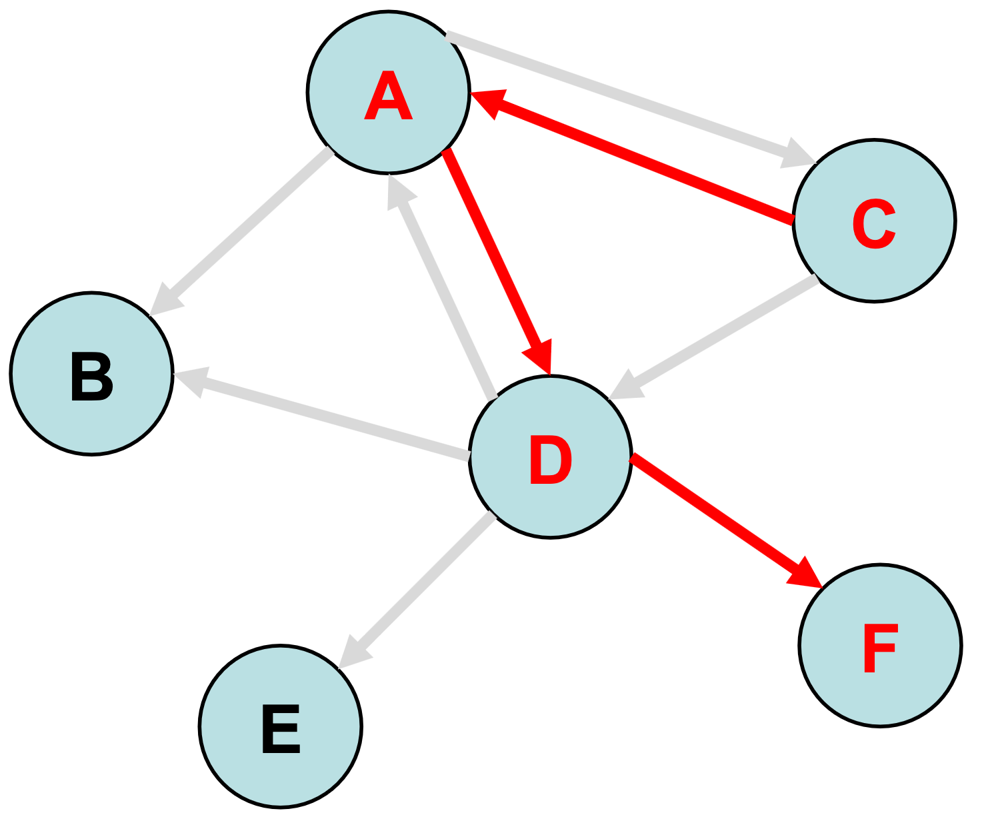
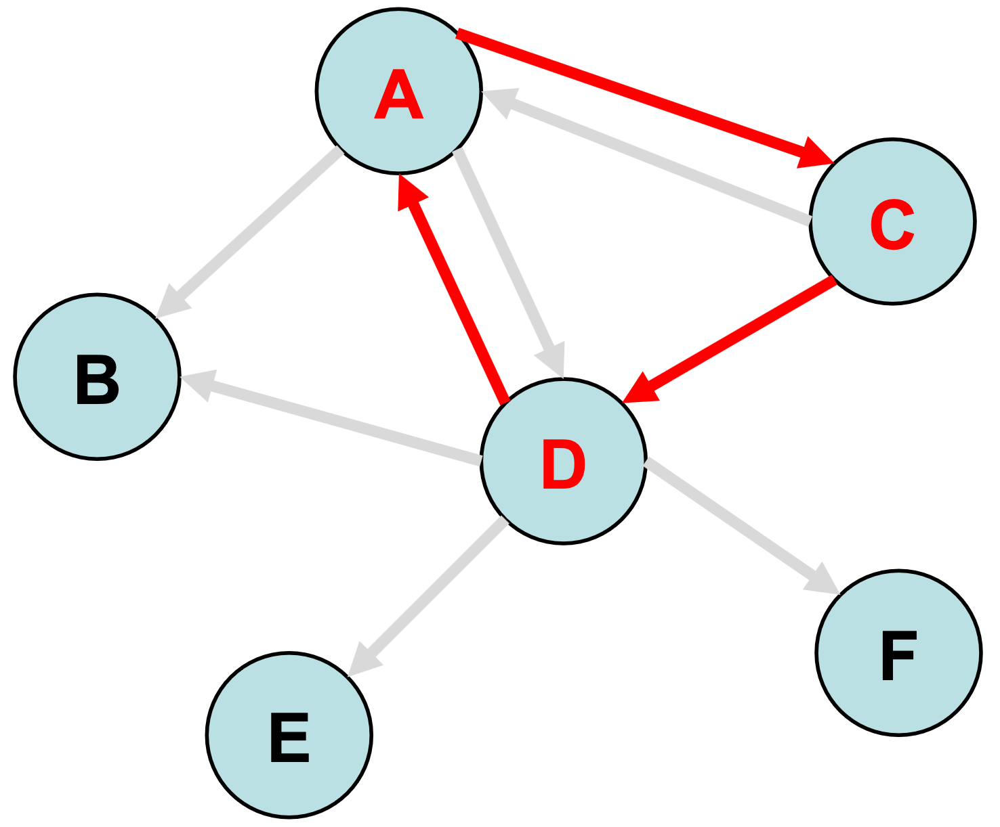
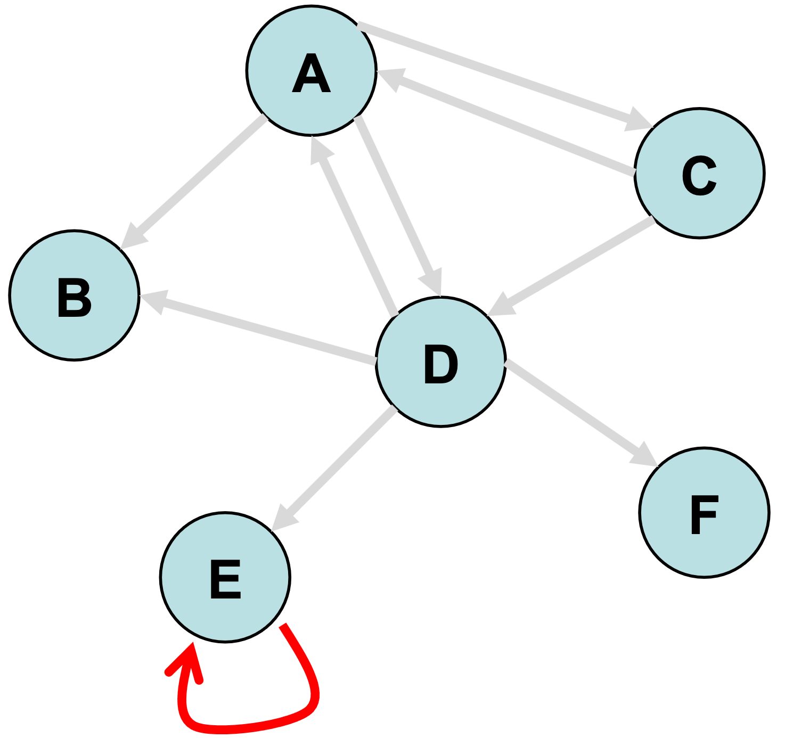
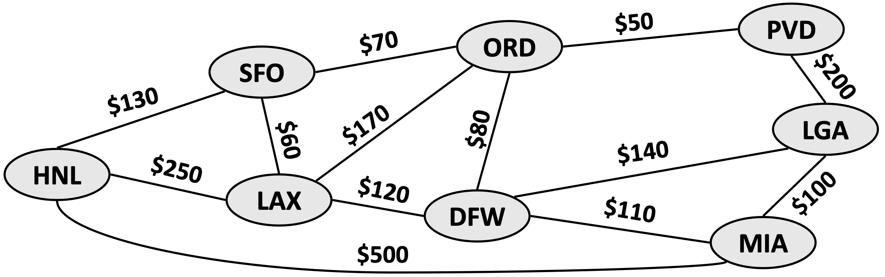
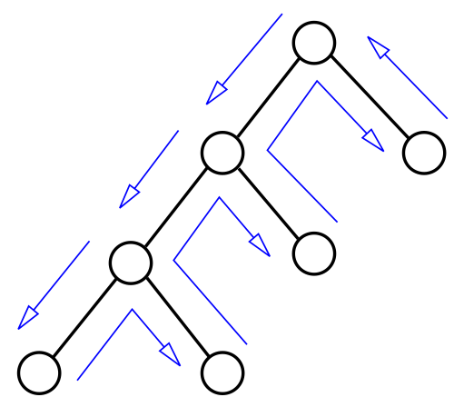
Funcionamento do DFS
Buscar caminho de a\(\to\) h, prioridade alfabética
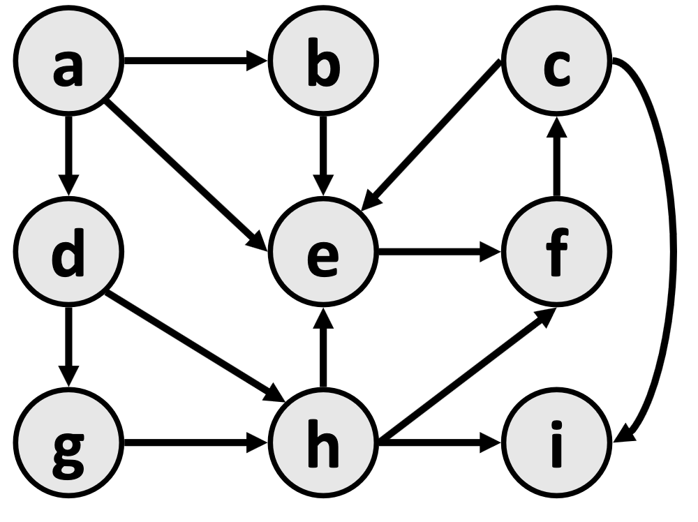
"Uma heurística estima o quão próximo estamos da solução."
Procedimento
Problemas
A* é um dos algoritmos de busca heurística mais importantes da Inteligência Artificial.
Ele combina o custo já percorrido com uma estimativa do custo restante.
g(n): g(n) é o custo do caminho do nó inicial até n
h(n): é uma função heurística que estima o custo do caminho mais barato de n até o destino.
| Heurística | Resultado | Notas |
|---|---|---|
| h(n)=0 | Dijkstra | Garante a descoberta do caminho mais curto. |
| h(n) \(\leq\) custo real | Ótimo e eficiente | Quanto menor for h(n), mais o A* se expande, tornando-se mais lento. |
| h(n) = custo real | Busca ideal | Segue o melhor caminho e nunca se desvie dele |
| h(n) \(\gt\) custo real | Superestima | Mais rápida, mas não ótima |
| h(n) >> g(n) | h(n) domina | BFS |
Repetir:
Manhattan
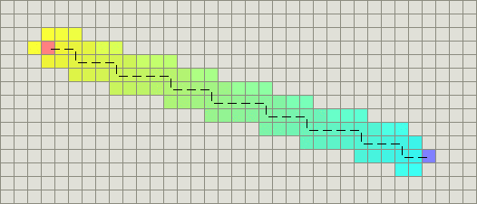
Diagonal
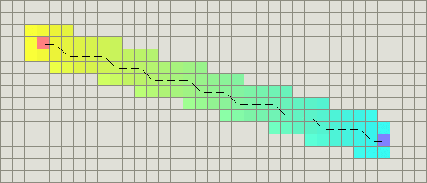
Euclidiana
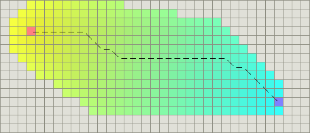
A Computação Evolutiva reúne técnicas de otimização baseadas nos princípios da evolução biológica, como seleção natural, reprodução e mutação.
"Boas soluções, rapidamente, para problemas difíceis."
Propostos por John Holland na década de 1970, simulam a evolução de uma população de soluções candidatas.
Exemplo: 1011010110010101
Mede a qualidade de cada indivíduo.
Quanto maior o fitness, melhor a solução.
Indivíduos mais aptos possuem maior probabilidade de reprodução.
Combina características de dois pais.
Pai 1: 110011|1010
Pai 2: 001101|0111
Filho 1: 1100110111
Filho 2: 0011011010
Introduz diversidade genética.
Antes: 1100110111
Depois:1100100111
def genetic_algorithm():
populacao = inicializar()
while not criterio_parada():
fitness = avaliar(populacao)
pais = selecionar(populacao, fitness)
filhos = crossover(pais)
filhos = mutação(filhos)
populacao = substituir(populacao, filhos)
return melhor_individuo(populacao)
Maximizar:
f(x) = \(\Sigma\)(x)
com x ∈ [-1, 1]